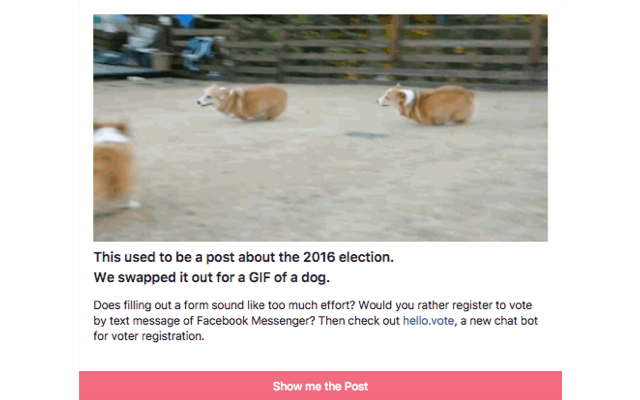

HotSwap is a Chrome extension that swaps out posts about the 2016 election with actionable political information (and a GIF of a puppy for good measure). I created this extension on my own in just three days and, at its peak, the extension was swapping out an average of 700 posts per day.
Experience
HotSwap gave me significant experience in front end web development, specifically in craftily modifying DOM elements with JavaScript.
Deliverables
Deliverables included the chrome extension itself (swapitlikeitshot.co) and a talk on how and why I created HotSwap.
Process
01 - A Contentious Election
The 2016 Election was, arguably, significantly affected by social media. In the years leading up to this election, social media has grown from a “platform for millennials” to a major source of information and news for a large portion of the population. This has resulted in a massive injection of politics into Facebook news feeds. Given the nature of this election, a record amount of this “news” is biased, leading, unsourced, or, at its worst, completely false. This problem is coming from every side of the aisle, so I came to the question: How can I remove the entire election from my news feed without compromising the social aspect of Facebook?
02 - Exit Politics, Enter Puppies
The first solution to this problem was to identify political posts through some basic keywords, then replace the post with a GIF of a puppy. The idea was that puppies are significantly better than politically charged posts (duh), so it’s an easy and beneficial swap. However, once I started discussing this idea with others, I kept hitting the question, “So what? What does this actually do other than block posts?” Puppies are great and all, but they don’t help in the political process.

03 - Give people better news options and tools to participate in the process
How can I affect change? I can encourage people to vote. How can I still inform HotSwap users on the news? I can serve them unbiased or multi-sided news. HotSwap launched with 10 possible post swaps. Half of these provided users with resources to register to vote, to check their registration, and to research the races and issues on their ballots. The other half provided a combination of non-partisan and balanced-partisan news sources. Most people have news feeds that are biased towards their own beliefs, so I chose sites like Blue Feed, Red Feed and AllSides to show every side of the news. We didn’t get rid of the puppies. They became very necessary as the election cycle moved on.
04 - Keep the political conversation available
Facebook has become a common locale for political discourse. The goal of HotSwap is not to remove this from users’ feeds, rather it allows for people to engage on their own terms. Each swapped post has a button allowing the user to reveal the post so they can engage if they so choose, but posts are hidden by default so users are not bombarded by this drawn out, laborious election season.